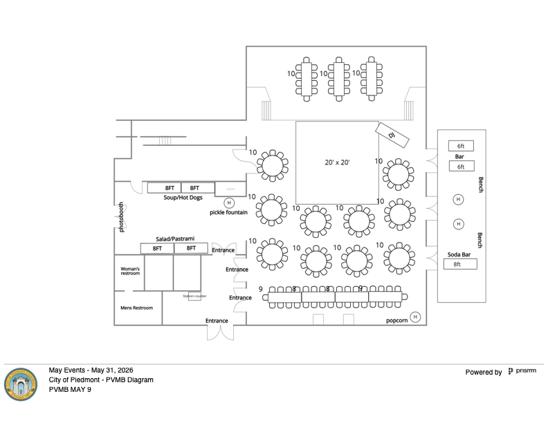
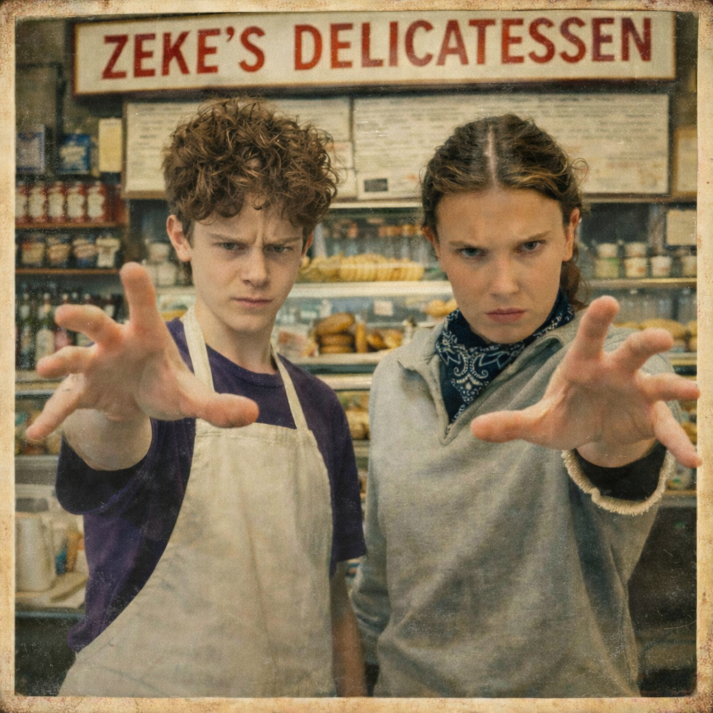
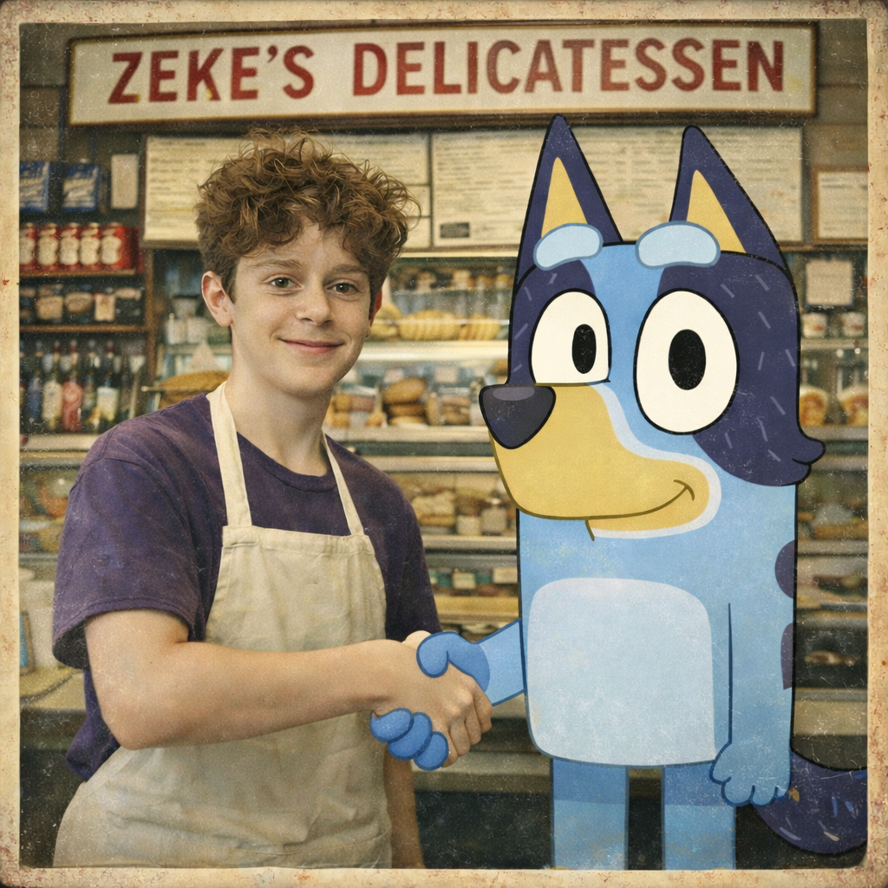
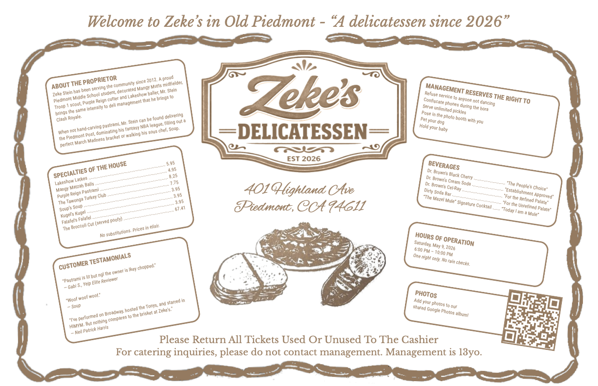

Answer Tonya's 4/17 questions on Anaviv revised layout: (a) Pastrami carving station needs to move off the wall so the chef can stand behind it. (b) Is there power at that table for a heat lamp? (c) Photo-booth-in-food-area will bottleneck — accept or re-think (fire code forces it).
Confirm Zoe final payment received — she invoiced $2,000 outstanding due 4/8 for officiating (pay at spokesonawheel.com/clients).
Place the Custom Ink hoodie order — 2 designs saved: "Zeke BM Hoodie 1" and "Zeke BM Hoodie White Full". Custom Ink's nag emails ("Your cart has abandonment issues") say we haven't pulled the trigger. Delivery window matters.
Final headcount to Anaviv — Ben told Tonya 191 on 4/17; sheet total is 193; Anaviv v4 proposal is 185. Lock one number.
Arin to send Kerry her music list — Ben sent his 4/11; Arin & Zeke's still pending.
Send the Logistics Email to guests — draft is ready; fill in the Redwood Glen lat/long, confirm teen-carpool offer, then send.
Get Elias Levy's correct email — Zeke gave the wrong one; ask via another channel (parents? school directory?).
Invite the mystery dancer kid (@Arin) — name TBD; good dancer Arin wants to add. Confirm name & email → send invite.
🤔 Decisions to Be Made
Reversible. But each one unblocks something.
Glow sticks: buy ~200 or skip? Distribute ~9:00 for final dance set.
Kid-game prizes: Mulberry gift cards? Candy? Deli-themed swag?
CustomInk hoodies: design locked; waiting on Custom Ink proofs. Approve proofs → place order.
Israeli folk dance: Marta & Orli confirmed leading — still need to discuss details with them (song choice, timing, who hypes).
Welcome toast script: Ben+Arin, 90 sec. Not written yet.
Cherry picking Sunday: headcount for mom / Deena (Trello open).
Shabbat catering scope: budget line $1,100 vs Emanuel proposal (unpriced in our materials). Get quote on paper.
⚠️ Conflicts & Discrepancies
Places the docs disagree with themselves.
Cousins aliyah list: Service Planning Doc includes "Miles" (not coming anyway); Printed program is canonical — Kyos, Tovin, Berel, Barb, Khanh, no Miles.
(Other conflicts resolved on 2026-04-18: Shabbat menu confirmed Mexican · PVMB permit hours confirmed · DJ Smiles cancelation finalized, refund pending Arin email · program Parshat Emor was a copy-paste error, ignored · chair rental is Reservation_598268, one reservation not two · Sunday is one event — cherry picking, with Deena's picnic.)
🫥 Things We May Be Overlooking
Low-probability, high-regret. Worth a once-over.
Rain plan: the service is outdoors under redwoods. If the forecast turns, we need a fallback — the 10th Street robotics practice facility is a candidate indoor spot. Decide trigger (probability? day-of call?), confirm access, and have a comms plan ready so 200 guests don't show up at Joaquin Miller in a downpour.
Cell signal at Redwood Glen is poor — everyone needs the logistics doc downloaded/printed. Remind in final Friday email.
Backup for Zeke's drash: printed copy in the Pack-for-Service bag. Memory is fallible at a lectern.
Who is handling kids who get separated from parents at the reception? 100 kids is a lot.
Medic / ice readiness at Redwood Glen — first-aid kit + coolers of ice. No obvious owner. (Bathroom is covered — there's one nearby.)
Allergens on the Anaviv and Emanuel menus — kids with restrictions? Signage on buffet?
Music: Zeke's exit song from the hora lift — DJ usually sets this; did Kerry get a note?
Day-after: gift bags, leftovers, pickup of rentals and decor — who is the day-after runner?
Gifts tab in the sheet is empty. Who writes down gifts at the door / during? (Thank-you notes workflow — card baskets at both venues will feed this.)
Havdalah timing: sundown ~8:15pm on 5/9; the run-of-show doesn't lock it in. Lock with DJ.
Emergency contact sheet printed and on-site with Gabi/Sean on-call team.
Mourner's Kaddish — Zoe · Zeke reads: Leah Rosin · Susanne Coleman · Lillian Kessler · Rachel Brown · Molly Williams · Taj Schrager · Lin's sister · Laurie Madonia · Mary Skinner · Amy Halio's dad · Shana Buswell-Charkow · Kugel · Falafel
Closing song — Adon Olam (Riptide)
Kiddush + Motzi — chavurah + Zoe
Closing remarks — Ben
Aliyot (printed program is canonical)
#
Who
Readers
1
Grandparents
Harriet Rosin · Louis Stein · Deena & Carl Newman · Robert Kramer
2
Aunts & Uncles
Ilana Barakat · Lauren Marcus · Charlie & Madeleine Newman · Cathy Newman · Olive Owusu & Eric Kloba · Joan & Markos Weiss
3
Cousins
Oliver · Lily · Jude · Sana · Henry · Walter · Ryder · Jackson · Kyle · Ezra · Max · Eli · Kyos · Tovin · Berel · Barb · Marta · Sean · Jean · Anton · Rosena · Ben · Khanh
4
Parents & Gabi
Arin · Ben · Gabi
5
Zeke
Yechezkel ben Binyamin v'Chana Arielle
Music
✅ Locked — song choices live in the program & the Service Planning Doc (SoundCloud links per prayer). 55 candidates in the Music sheet tab are reference only at this point.
Readings & Players
Haftarah (Jeremiah 32:6-27): Gabi
Ark Opening: Yuba Kids (~12)
Undress Torah: Isaac Dolid & Solomon (Soli) Gur
Hagbah (lift): Jeremy Goldman
Gelilah (dress): Emily, Adi, Nora Goldman
Tallit presentation: Ben
Parents' blessings: Arin (first), Ben (second)
Candy throw: Dobson family distributes Nerd Gummy Clusters
Feed the DJ-style mic/board into the phone camera. Two cheap parts:
USB-C-to-3.5mm adapter — must be one with a DAC that accepts input, not just headphones out. Safe: Google's own USB-C adapter (~$15) or a UGREEN labeled "mic input supported." If the listing doesn't mention input, skip it.
A/V helpers: Gabi + Lou · Rikud: Orli + Marta · Oneg setup: Eli · Lauren
Run of Show
6:00–6:45
Doors open. Passed apps immediately (load-bearing — takes the edge off hunger). DJ chill background. Photo montage looping on TV. Photo station open.
6:45
Zeke's grand-ish entrance + HORA (15 min). Chair lifts. Layered energy. MC lands it while it's still soaring.
7:00
Israeli folk dance lesson (10 min). One dance, taught. Half the room is non-Jewish — frame as a gift, not an ask. Yo Ya or Od Lo Ahavti Dai.
~7:00
Welcome toast — Ben + Arin. 90 seconds. Warm, done.
7:15
Kid dinner — MC sends under-18s to buffet first. Adults dance.
7:30
Adult dinner + kid games (limbo → coke & pepsi). Adults ring the floor.
~7:45
Havdalah — Goldman family leads. Guitar out. Gather tight. Pivots DJ energy down → up.
8:00
Dance Set 1 (all ages) — high energy. Kids and adults together. Peak #2.
8:30
Pickle / B&W cookie contest — kids vs parents.
8:45
Dessert — black & white cookies, strawberry banana pudding, fruit.
9:00
Final dance set — closing bangers. Glow sticks distributed 9:00–9:05.
9:30
MC announces last song.
9:35–9:40
Last song + send-off. End on a peak, not a fade.
9:40–10:00
Guests out · breakdown.
⚠️ Concern: 8–10pm as pure dance — too much?
Two solid hours of dancing with only a pickle-cookie contest and a dessert call breaks up the back half. It could peak early and drag. Ideas to layer in breaks / second waves of energy:
Zeke's thank-you moment (2 min, ~8:30) — short, personal shoutouts to grandparents / friends. Doubles as a breather.
Second hora (abbreviated) mid-set — chair lift for Arin & Ben this time. 5–7 min.
Line-dance comeback — bring back Yo Ya or teach a new one (Cha Cha Slide, Cupid Shuffle) as an all-ages reset.
"Who Knows Zeke Best?" — move it from the 7:30 slot to ~8:40 as a mid-dance interlude that lets adults sit.
Tribute video (3 min) — repurpose the photo montage at a peak moment.
Dance-off / lip-sync battle — structured spectacle, gives the floor a rest while it watches.
Glow stick moment as its own beat — dim lights, DJ drops the song, distribute in the dark. Currently buried as a handout.
Pickle contest already exists at 8:30 — keep, but make it bigger. Volunteer wave-offs, crowd judging, Zeke MCs.
Kid-only dance number followed by an adults-only — "kids clear the floor for one song."
Pick 2. Want max energy? Layer in second hora + glow stick drop. Want breathers? Thank-you moment + trivia interlude.
Floorplan (latest draft)

PVMB · May 9 revised layout from Ivy Sandoval (PRD Facilities). Draft still shows a 20'×20' dance floor — we've cut that. Tonya (Anaviv) has flagged 2 open issues on this version: (1) pastrami station must move off the wall so the chef can stand behind it, and (2) is there power at that table for a heat lamp? Also: photobooth next to food will cause bottlenecking but fire code forces it.
Music / Hora / Dance
Hora song order (placeholder — confirm w/ Kerry)
Hava Nagila — Pavlovian circle former
Siman Tov U'Mazal Tov — chair lifts here
Hevenu Shalom Aleichem — circle widens
Nigun Atik — snaking line, hands-on-shoulders
Israeli folk dance — teach one
Yo Ya
Od Lo Ahavti Dai
10 minutes max, including teaching. Goal: "that was awesome" not "are we still doing this?"
Decision locked: hoodies from Custom Ink. 113 sizes collected. Waiting on Custom Ink proofs — approve proofs to release the order.
Item
Unit
~113 units
OK Hoodies
$26
$3,173
Nice Hoodies
$44
$5,370
Budget line for merch is $1,400. Nice Hoodies × 113 = $5,370 — roughly 3.8× over. For that money we could hire a second photographer, throw a second kiddush, AND feed an Oakland family of four for a month. Are we out of our goddamn minds? (Yes. Plan the variance. They'd better be excellent hoodies.)


Sunday · Cherry Picking
When: Sunday May 10 · 10am–12pm
Where: Dwelley Organic U-Pick Cherries · Brentwood, CA
Travel: ~1 hour drive · can be hot · check weather
Brunch: Deena brings a picnic to the cherry orchard (this is what the Trello "Sunday Brunch" list is about — same event).
Optional: explicitly framed as an adventure, not a required event
Tradition: the family goes every Mother's Day
Trello open (@Arin)
Give Deena headcount
Pack drinks in coolers (water / seltzer)
Mitzvah Project · Meals for Oakland
Goal: 150+ meals for food-insecure people and 30 hungry dogs, in partnership with Community Kitchens.
"As a service project for his upcoming Bar Mitzvah, Zeke S. decided to cook a whole bunch of great food for the community!"
Confirmed numbers from the post: 30 kids · ages 5–15 · 3 days · 150 individual meals (teriyaki chicken, fajitas, cheeseburgers) · delivered to Town Fridges. CK's pitch at the end: become a Home Chef volunteer (Zoom training 4/22).
Connection to the Drash
Zeke's Parashat Behar drash builds directly on this work. From his latest draft (Tab 11): "In my portion, during the shmita year when we don't harvest, people and animals who need food are allowed to eat the leftover crops. I thought this was really meaningful, so I did something similar." He then invites the room in: "If you weren't part of the first three groups and this inspires you, come find me let's do another one."
Placemats — quoted: 150 × 70lb text ≈ $112.50+tax (Fatima)
Deli signs — $200 budgeted · design done
Mustard labels — Avery 94053; ready to print
Banner — ✅ ordered (Trello Done)
Door signs + Photobooth sign — ✅ done
Swag — 113 sizes collected · CustomInk designs exist · pending final order
The Placemat · "Welcome to Zeke's in Old Piedmont"

The final placemat — hand-drawn Katz's-style border, brown kraft palette, QR code in the lower right for the shared Google Photos album. All proprietor lore certified true.
About the Proprietor
Zeke Stein has been serving the community since 2012. A proud Piedmont Middle School student · decorated Mangy Mutts midfielder · Troop 1 scout · Purple Reign cutter · Lakeshow baller. Brings the same intensity to deli management that he brings to Clash Royale.
When not hand-carving pastrami, Mr. Stein can be found delivering the Piedmont Post, dominating his fantasy NBA league, filling out a perfect March Madness bracket, or walking his sous chef, Soup.
Specialties of the House
Lakeshow Latkes
5.95
Mangy Matzah Balls
4.95
Purple Reign Pastrami
8.25
The Tawonga Turkey Club
7.75
Soup's Soup
3.95
Kugel's Kugel
3.95
Falafel's Falafel
3.95
The Broccoli Cut (served poofy)
67.41
No substitutions. Prices in elixir.
Customer Testimonials
"Pastrami is lit but ngl the owner is lkey chopped."
— Gabi S., Yelp Elite Reviewer
"Woof woof woof."
— Soup
"I've performed on Broadway, hosted the Tonys, and starred in HIMYM. But nothing compares to the brisket at Zeke's."
— Neil Patrick Harris
Beverages (for the record)
Dr. Brown's Black Cherry — "The People's Choice"
Dr. Brown's Cream Soda — "Establishment Approved"
Dr. Brown's Cel-Ray — "For the Refined Palate"
Dirty Soda Bar — "For the Unrefined Palate"
The Mazel Mule Signature Cocktail — "Today I am a Mule"
Hours of Operation: Saturday, May 9, 2026, 6:00 PM – 10:00 PM. One night only. No rain checks.